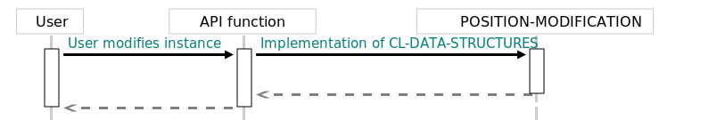

Internal details
This section explains parts of system design and low-level elements that shouldn't bother user of the library. However, they are critical for contributors, and some people just want to know and so shall be delivered.
Lazy evaluation
This system offers the lazy-evaluated containers. Lazy evaluation is useful primarily because eager functional data structures may have somewhat sluggish performance if multiple, full copy-on-write operations have to be performed when inserting or erasing a large number of records from the container. Lazy evaluation allows to hide destructive operations behind the functional interface, and therefore help to counter this issue. The effectiveness of this technique varies greatly, and depends on both internal structures of the container, as well it's current content. However, what remains constant is the approach used in the implementation of lazy evaluation in this library.
As already established in the Overview section, this library contains transactional variants of some of the data structures. Because transactional data structures form a wall isolating destructive changes, they can be used for the internal parts of the lazy evaluation style optimization. Now, the other part of the recipe is to build a functional interface around the transactional instance. This essentially requires us to use to proxy objects that will fully adapt mutable interface into the functional interface. Because of a symmetric design of the containers API, each destructive function has also functional counterpart. This makes the task fairly easy.
To translate functional API function calls into mutable calls, a new class called LAZY-BOX-CONTAINER is introduced. LAZY-BOX-CONTAINER is holding the transactional instance of container alongside the CHANGES instance. All functional variants of API functions applicable to the internal instance, are applicable to the LAZY-BOX-CONTAINER instance as well and return values consistent with the documentation. This is done by either manually implementing methods to work on LAZY-BOX-CONTAINER (this is the case for all query functions) or by intercepting internal low-level mechanisms of position modification metaprotocol (the case for all modification functions). In other words, the LAZY-BOX-CONTAINER is (according to the design patterns terminology) a proxy. By implementing this interface, it becomes possible to capture and enclose all modification calls in closures that can be executed later. Each time POSITION-MODIFICATION method for LAZY-BOX-CONTAINER is called a new instance of the LAZY-BOX-CONTAINER with an additional closure (as well as a reference to the previous closures) and the isolated transactional instance is getting created and passed to the user. Now, the question arises: when it is required to call closures on the internal container?
The answer to this question is simple: cl-data-structures will call the closures only when user will query the state of the container. This will in turn destructively change the internal container, however because of transactional semantics, changes will not leak outside. Finally, the query can be finished by forwarding call to the freshly transformed internal container. At this point closures in the LAZY-BOX-CONTAINER can be discarded, as changes have been fully transferred to the state of the internal container. This creates the illusion of a fully functional interface while minimizing the cost of the copy-on-write procedure.
To summarise: lazy evaluation of the data structures is taken care of as long as a transactional variant of the data structure is available.
POSITION-MODIFICATION metaprotocol
The package defines its own internal object protocol that is used to build parts of user API responsible for container modifications. This concept is nicknamed position-modification metaprotocol and is described in this section.
As every object protocol, position-modification metaprotocol consists of classes and generic functions that are expected to be implemented for said classes. Those functions are designed to peform low level (that is: dependent on the internals structure) operations on containers. For instance, those operations include manipulations (and construction) of buckets (and "bucket" is obviously low level term used in description of data structure).
Layer as a whole, derive it's name from one particular generic function called POSITION-MODIFICATION. It acts as a point of implementation for all functionality releated to modification of containers and therefore is called directly by functions like INSERT. Methods implementing POSITION-MODIFICATION act by calling other functions of this protocol.
POSITION-MODIFICATION accepts OPERATION as a first argument. OPERATION is an object of one of protocol classes FUNCTIONAL-FUNCTION or DESTRUCTIVE-FUNCTION. Objects of those classes include generic functions defined as part of the API. This is made possible by the fact that Generic Functions inCommon Lispare in fact objects of their own classes. In addition to those fundamental classes, protocol contains additional trait classes like for instance the GROW-FUNCTION. Because of this, it is possible to query API functions for expected behavior. It also makes possible to write methods that dispatch on the behavior of the API functions. These include (as already established) bucket manipulation functions: SHRINK-BUCKET, GROW-BUCKET, MAKE-BUCKET.
Because all of those functions are generic; and just like POSITION-MODIFICATION they accept OPERATION argument, it is possible to dispatch bucket modification logic, based on the class of the API function. Employing this approach allows to remove code duplication between various types of modification functions, and therefore reduce the burden of supporting functions like ERASE-IF in the codebase. Furthermore, establishing this protocol allows to alter standard behavior of buckets, and by that, create nested data structures.
Nested data structures are a nontrivial problem when immutable behavior is expected. In most cases, immutability is achieved by using copy-on-write semantics. Because copying in nested structures has to happen on multiple levels, It is essential to be able to intercept logic at the lower level of the data structure. Luckily, as describedCommon Lispoffers tools that allowed us to build an elegant solution for such problem.
Generic Functions
Symbols in the package CL-DATA-STRUCTURES:Arguments:
- OPERATION, Instance of API function.
- CONTAINER, Instance of container class
- LOCATION, Where modification is supposed to happen?
Description: A low level function used as de facto implementation point of all API modification functions (INSERT, ADD, UPDATE).
Returns:
- Container (new or the same instance)
- Modification status
Notes: Implementations of this generic function are multimethods dispatched on the class of the OPERATION and on the CONTAINER.
Returns:
- New or passed bucket. May return nil as empty bucket.
- Instance of position modification status.
Side Effects: Can modify bucket.
Returns:
- Bucket.
- Instance of modification-operation-status.
Notes: This function is not allowed to perform any side effects. See grow-bucket! for function that is allowed to do so.
Returns:
- Bucket. May also return nil to indicate empty bucket.
- Instance of modification-operation-status.
Notes: This function is not allowed to perform any side effects. See shrink-bucket! for function that is allowed to do so.
Returns:
- New or passed bucket.
- Instance of position modification status.
Side Effects: Can modify bucket.
Returns:
- Bucket. May also return nil to indicate empty bucket.
- Instance of modification-operation-status.
Arguments:
- OPERATION, Instance of the modification API function.
Description: Low level function that returns an instance of the functional api modification function that serves the same purpose as the OPERATION. Will, for instance, return #'UPDATE when OPERATION is #'UPDATE! Will return original the OPERATION if OPERATION is already part of the functional API.
Returns: The instance of api function.
Notes: This function is low level, and therefore should be rarely (if ever) used by the user of this library.
Arguments:
- OPERATION, Instance of the modification API function.
Description: Low level function that returns an instance of the destrutive api modification function that serves the same purpose as the OPERATION. Will, for instance, return #'UPDATE! when OPERATION is #'UPDATE Will return original the OPERATION if OPERATION is already part of the functional API.
Returns: The instance of api function.
Notes: This function is low level, and therefore should be rarely (if ever) used by the user of this library.
Classes
Symbols in the package CL-DATA-STRUCTURES:Description: Function that inherits this class is not allowed to perform any side effects.

Description: Function that inherits this class is expected to perform side effects.
Description: Function will attempt to remove element from container.
Description: Function will attempt to add new element to container.
Description: Class of INSERT and (SETF AT).
Description: Class of UPDATE and UPDATE!.
Description: Class of UPDATE-IF and UPDATE-IF!.
Description: Class of ADD and ADD!.
Description: Class of ERASE and ERASE!.
Description: Class of ERASE-IF and ERASE-IF!.
Description: Class of INSERT.

Description: Class of UPDATE.
Description: Class of UPDATE-IF.
Description: Class of ADD.

Description: Class of ERASE.
Description: Class of ERASE-IF.
Description: Class of INSERT.
Description: Class of UPDATE.
Description: Class of UPDATE-IF!.
Description: Class of ADD.
Description: Class of ERASE.
Description: Class of ERASE-IF!.
Aggregation algorithms metaprotocol
Just like position-modification metaprotocol, there is set of functions and classes used to construct aggregation algorithms. Purpose of those is to separate algorithms from obtaining data, so it will become possible to aggregate per group, without any modifications or memory allocations. In future, I hope to implement SERIES style stream fusion compilation to inline aggregation logic whenever possible which should improve performance, but for now it simply uses generic functions dispatched at runtime.